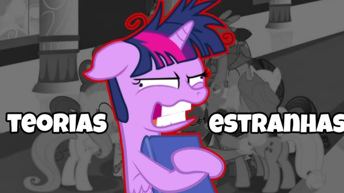

My Little Pony
Teorias
Estas son algunas teorias que tiene el fandom sobre la serie y su futuro.

- Discord no es un draconequus. De hecho, no existe tal cosa como un draconequus. Es solo una palabra aleatoria que Discord inventó para que los ponis tuvieran algo con qué llamarlo (o quizás los ponis lo llamaron así por su cuenta y él simplemente lo aceptó). Discord es la encarnación literal del caos, no se llama Discord porque le quede bien, él es literalmente Discord. Y como avatar del caos, no esperaría que tuviera una especie definida. Así que draconequus es una farsa.
- Discord creó a Cozy Glow. ¿Me quieres decir que esta niña apareció un día y resulta ser una villana de la nada y nadie fue a buscarla cuando la enviaron al Tártaro o la convirtieron en piedra? Nadie. Uno esperaría que sus padres y familiares exigieran a Twilight que la reformara como a cualquier otro villano, pero no, nadie preguntó. Ni ella menciona a su familia. Y el hecho de que sea una psicópata casi al límite (manipuladora, mentirosa patológica, falta de empatía, ver a los demás como meras herramientas, narcisismo) parece como si estuviera hecha para ser una villana. Literalmente. Pero eso es una tontería, ¿verdad? Nadie crearía voluntariamente a un villano de la nada. Y además, no es como si hubiera algún dios omnipotente loco por ahí con una grave falta de razón que estuviera intentando poner a prueba a Twilight y esas cosas… ah, cierto, Discord.
- El Árbol de la Armonía podría haberse salvado. ¿Recuerdas después de que Sombra destruyera el árbol y este visitara los sueños colectivos de las seis jóvenes? El árbol no logró entregar completamente el mensaje que intentaba dar. Solo pidió ayuda. ¿Y qué hacen las seis jóvenes con eso? Piensan que el árbol quería que construyeran un monumento. ¿Qué pasaría si el árbol en realidad estaba pidiendo que lo salvaran porque había una manera de repararlo? Pero las seis jóvenes eran demasiado ingenuas para entender eso, así que siguieron adelante y literalmente profanaron su cadáver sin vida, quizás destruyendo todas las últimas posibilidades de traer de vuelta el árbol (o Harmonia, como a veces lo llamo) y construyendo una casa del árbol con él.